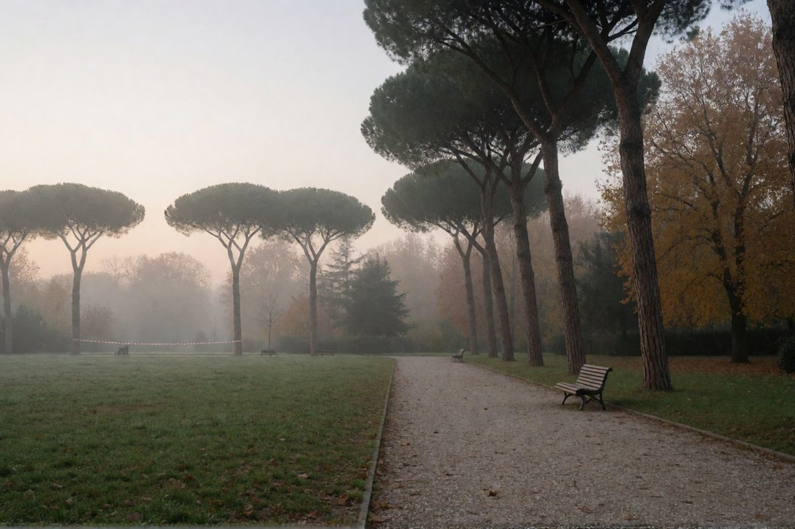

Cronaca · 7 novembre 2026
Villa Pamphili, ergastolo per Francis Kaufmann

La prima Corte d'assise di Roma lo ha condannato all'ergastolo con tre anni di isolamento diurno per l'omicidio della compagna e della figlia di 11 mesi. Dal ritrovamento dei corpi alla sentenza sono passati diciassette mesi.
di Franco Zanghì
Il 5 novembre la prima Corte d'assise di Roma ha condannato all'ergastolo, con tre anni di isolamento diurno, Francis Kaufmann, statunitense di 46 anni, per l'omicidio della compagna e della loro figlia di 11 mesi. I corpi delle due vittime, Anastasia Trofimova, 28 anni, e la bambina Andromeda, furono trovati a Villa Pamphili, a Roma, nel giugno del 2025, a pochi metri l'uno dall'altro.
Diciassette mesi dal ritrovamento alla sentenza
Il processo è cominciato il 2 febbraio 2026 e la sentenza è arrivata a novembre. Fra il ritrovamento dei corpi e il primo verdetto sono passati diciassette mesi. In un paese dove i processi per omicidio impiegano spesso anni solo per arrivare in aula, è un tempo breve, e va detto: quando la giustizia è lenta lo diciamo sempre.
Secondo la ricostruzione riportata dall'Ansa e dal Post, Kaufmann avrebbe soffocato la compagna e, alcune ore dopo, strangolato la bambina.
Chi ha deciso
La Corte d'assise non è un collegio di soli magistrati. È composta da due giudici togati e da sei giudici popolari, cittadini estratti a sorte dalle liste comunali, che decidono con lo stesso peso di voto dei magistrati. È il collegio che giudica i reati più gravi, l'omicidio fra questi, e la scelta di affidare quelle decisioni anche a cittadini comuni è scritta nella Costituzione.
La sentenza letta il 5 novembre contiene il dispositivo, cioè la decisione. Le motivazioni, il documento che spiega il ragionamento dei giudici, saranno depositate nelle settimane successive, ed è su quelle che si costruisce l'eventuale appello.
Che cosa significa la pena
L'ergastolo è la pena più alta dell'ordinamento italiano. L'isolamento diurno, in questo caso tre anni, è una pena aggiuntiva che si applica quando la condanna riguarda più delitti gravi: qui le vittime sono due, e una è una figlia di pochi mesi.
È una sentenza di primo grado. La difesa potrà ricorrere in appello e poi in Cassazione, e fino alla sentenza definitiva vale la presunzione d'innocenza, anche davanti a una condanna all'ergastolo. Non è un dettaglio da avvocati: è la regola che protegge tutti, e si rispetta soprattutto quando il fatto fa orrore.
Chi resta fuori dal racconto
Di questo processo si è parlato molto per chi è l'imputato, un uomo arrivato dagli Stati Uniti con diverse identità, e molto meno per chi sono le vittime: una donna di 28 anni e una bambina che non ha fatto in tempo a compiere un anno. Una giustizia arrivata in fretta non le restituisce. Ma almeno, questa volta, non le ha fatte aspettare.
Fonti
- Ansa, «I femminicidi di Villa Pamphili, Kaufmann condannato all'ergastolo», 5 novembre 2026
- Il Post, «Francis Kaufmann è stato condannato all'ergastolo per aver ucciso la compagna e la figlia», 5 novembre 2026
- Sky TG24, «Delitto di Villa Pamphili, Kaufmann condannato all'ergastolo», 5 novembre 2026
- Tgcom24
I tre anni di isolamento diurno e i nomi delle vittime non erano nel testo di partenza: sono stati aggiunti con il ricontrollo del 7 novembre sull'Ansa. Le motivazioni della sentenza non sono ancora depositate.